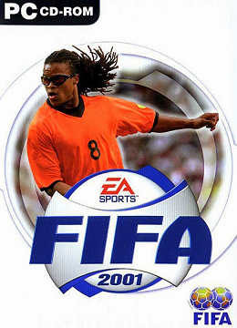
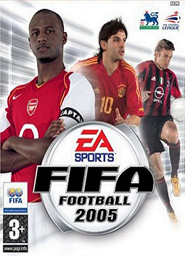
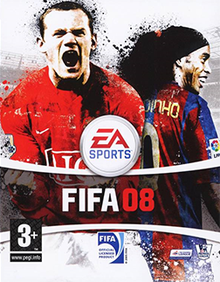
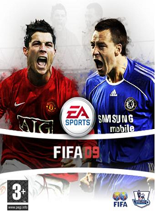
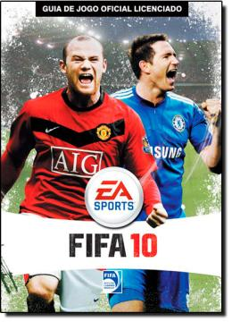
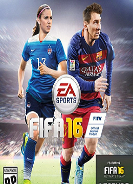
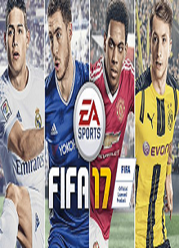
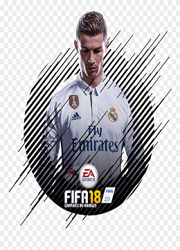
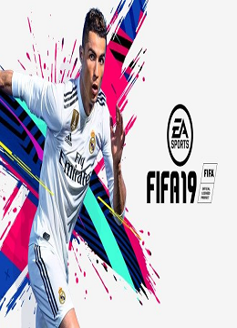
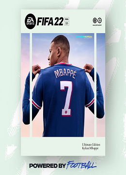

O FIFA 2000 trazia 18 ligas, seis a mais que seu antecessor. Pela primeira vez, o jogo trazia a Major League Soccer, substituindo a liga americana dos jogos anteriores que continha equipes fictícias baseadas na liga de futebol que a antecedeu.
FIFA 2001
R$ 100,00

O FIFA 2001 possui 17 ligas com a adição da Austrian Bundesliga e com a saída da Super Lig da Turquia. O Campeonato Brasileiro é composto por 15 equipes: os 12 maiores clubes do país, mais Bahia, Vitória e Atlético-PR.
FIFA 2002
R$ 100,00
FIFA 2003
R$ 100,00
FIFA 2004
R$ 100,00
FIFA 2005
R$ 100,00

FIFA 2006
R$ 100,00
FIFA 2007
R$ 100,00
FIFA 2008
R$ 100,00

FIFA 2009
R$ 100,00

FIFA 2010
R$ 100,00

FIFA 2000
R$ 100,00
FIFA 2012
R$ 100,00
FIFA 2013
R$ 100,00
FIFA 2014
R$ 100,00
FIFA 2015
R$ 100,00
Eeito o melhor o jogo da franquia
FIFA 2016
R$ 100,00

O FIFA 16 introduz o “No Touch Dribbling”, o famoso movimento de finta baseado no estilo de jogadores como Messi ou Neymar. O comando consiste em balançar o corpo do jogador lateralmente com a bola parada, de modo a confundir o defesa e abrir espaço para finalizar um movimento
FIFA 2017
R$ 100,00

FIFA 2018
R$ 100,00

FIFA 2019
R$ 100,00

As principais novidades do FIFA 19 estão no modo Jogo Rápido, que dá mais opções para aqueles que gostam de jogar uma partida com os amigos no churrasco de fim de semana.
Além de amistosos (o único tipo de jogo possível para o modo Jogo Rápido até o FIFA 18), agora também é possível escolher jogar partidas de ida e volta (onde valerá a somatória dos resultados para definir o vencedor) ou uma série de melhor de 3 ou melhor de 5, que será perfeita para decidir quem definitivamente é o melhor jogador de FIFA da turma
FIFA 2020
R$ 100,00
Lionel Messi, um dos embaixadores do PES, foi convencido pelo FIFA em 2012 a figurar na capa do jogo FIFA Street e hoje é um dos maiores destaques no novo FIFA 20. Outro caso notável foi o do jogador do Arsenal Thierry Henry, que era considerado um fã de FIFA
FIFA 2021
R$ 100,00
FIFA 2022
R$ 100,00

FIFA 22 é posicionado como o alicerce para os próximos 5 anos da série e a tecnologia Hypermotion detém uma grande parte da responsabilidade dessa ambição. Hypermotion é a palavra de ordem em FIFA 22, com a qual a EA Sports espera demonstrar como as versões PS5, Xbox Series e Stadia do jogo vão mostrar com grande gabarito os avanços sobre o anterior jogo e até a anterior geração de consolas. A EA Sports


.png)